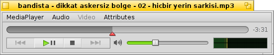

中文 ［中文］
中文 ［中文］ Català
Català Deutsch
Deutsch English
English Español
Español Français
Français Italiano
Italiano Magyar
Magyar Polski
Polski Português
Português Português (Brazil)
Português (Brazil) Română
Română Slovenčina
Slovenčina Suomi
Suomi Svenska
Svenska Русский
Русский Українська
Українська 日本語
日本語 媒体播放器
媒体播放器
| 桌面栏： | ||
| 位置： | /boot/system/apps/MediaPlayer | |
| 设置： | ~/config/settings/MediaPlayer |
媒体播放器是所有音频和视频文件的默认播放器。由于使用 ffmpeg 作为后端，因此支持广泛使用的多种媒体格式。它简洁的接口提供了您所期望的所有控制：
进度栏允许您快速的跳转到某个位置，将鼠标停放在其上将弹出显示当前和剩余时间。点击右边的时间显示，将会在总时间，当前时间和剩余时间之间切换。
在其下方，您可以看到常用的控件，下一个，播放/暂停，停止以及下一个。之后时声音控制（点击音响符号在静音之间切换）和音量计。
音频和视频播放
因为音频播放没有任何特殊的效果，我们将直接介绍视频和通用特性。

对所有媒体都可用的是 (ALTI)。它显示有关当前载入文件的信息，如播放时间或音频/视频轨道细节和它的编码。
菜单中大部分的常用命令也可以通过屏幕区域的右键菜单使用。在全屏模式中尤其方便。
在 菜单下，您可以看到用于缩放窗口或强制使用纵横比。保持纵横比为默认的 非常适用于正确的编码文件。
媒体播放器支持 SRT 格式中的子标题。为了让其显示于 之下，它们的文件名必须与其视频文件相同，但其后缀必须为 ".srt" ，而不是视频扩展。例如：
MyMovie.avi MyMovie.Deutsch.srt MyMovie.English.srt MyMovie.Français.srt
多声道音频，通常用于具有多语言的视频文件，并且在 子菜单中可用。当有可用的多声道视频时， 子菜单提供了同样的内容。
您可以切换为 模式（ALT ENTER 或 F 或双击左键），使用 隐藏媒体播放器的窗口边框和控件（ALT H 或双击右键）或者可以让其 （ALT A）。
播放列表
(ALT P) 打开窗口显示当前播放队列中的文件。双击条目将会开始播放。

您可以通过拖拽将更多文件添加到列表，也可以通过拖拽重新排序。通过 菜单您可以 、、(删除) 列表中的条目，或通过 删除磁盘文件（ALT T）。
当然，您也可以 播放列表以便之后 ，或这双击播放列表文件打开。
设置
有几个设置可以更好地控制媒体播放器的行为：

第一组， 非常容易理解。自动启动播放，当完成时关闭窗口，以及循环播放。
接下来为不同的 。
您可以选择 ，它可以减小处理器负载，但是仅对单个窗口有效，并且需要支持的视频卡驱动。
您也可以选择 （当不处于加速模式时），它可以使用快速滤镜实现平滑播放，但是当缩放视频或者全屏播放时，会出现像素混乱。
如果您喜欢简单的大控件，或者当您在远处以全屏模式播放时，可以选择 。
还有一些用于 和 的设置。它们可以显示于 ，这样可以使其总是覆盖于图像之上。或者可以处于 ，如此允许您自定义窗口，使子标题处于底部的黑色栏之内。
最后的设置用于决定未激活窗口的片段的音量。您可以将其设置为 ，至少为 或者直接 。
键盘控制
媒体播放器提供了简便的快捷键以控制媒体的播放。
| Z | 跳转到上一个。 | |
| X | 播放 | |
| C | 暂停 | |
| V | 停止 | |
| B | 跳转到下一个 |
这些快捷键和控制按键的功能相绑定。它们通常是键盘左下边的按键，也就是说，它们和您的当前键盘使用相独立。上述按键与标准美式键盘相对应。
| ← / → | 向前/向后查找 | |
| SHIFT ← / → | 后退/前进 10 秒 | |
| ALT ← / → | 后退/前进 30 秒 | |
| ↓ / ↑ | 减小/增大音量 | |
| ALT ↓ / ↑ | 跳过到下一个/上一个轨道 | |
| 空格键 | 切换 播放/暂停 | |
| ALT ENTER | 切换全屏模式（也可以通过双击屏幕区域，或者按下 F 或者 TAB 完成） | |
| ALT SHIFT 0 / 1 / 2 / 3 | 修改屏幕长宽比为 （视频编码原生模式）， （将视频像素以 1:1 比例映射到屏幕），， |